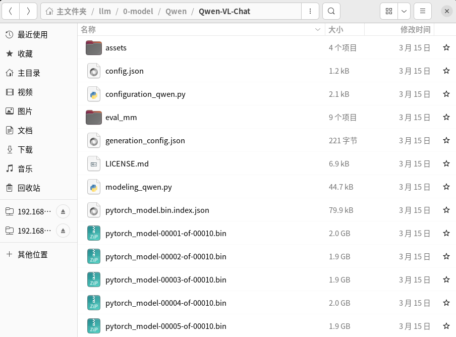
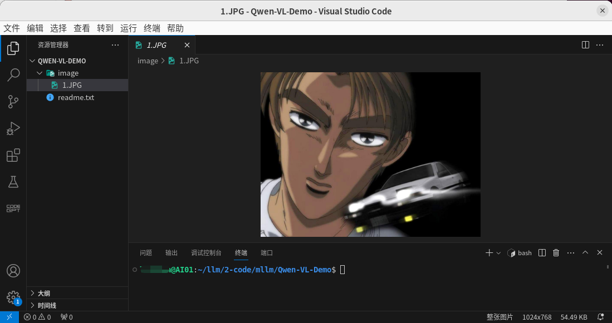
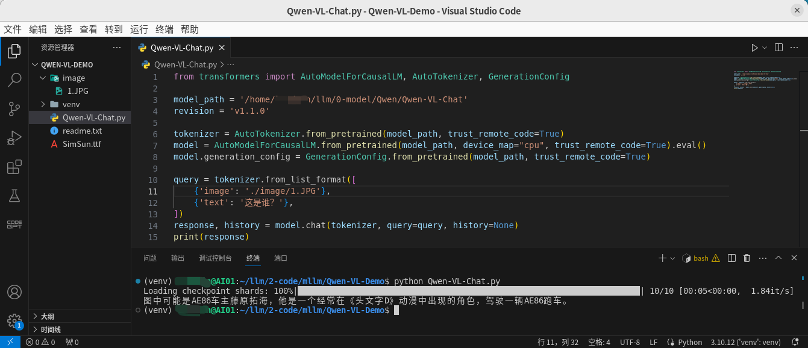
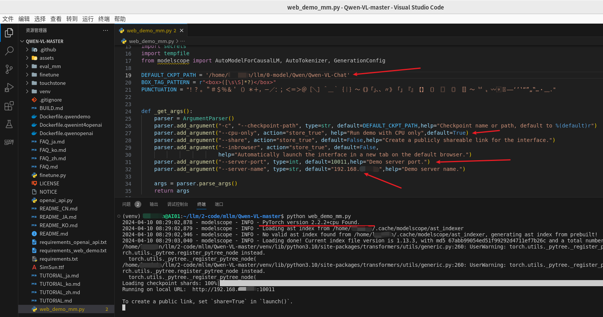
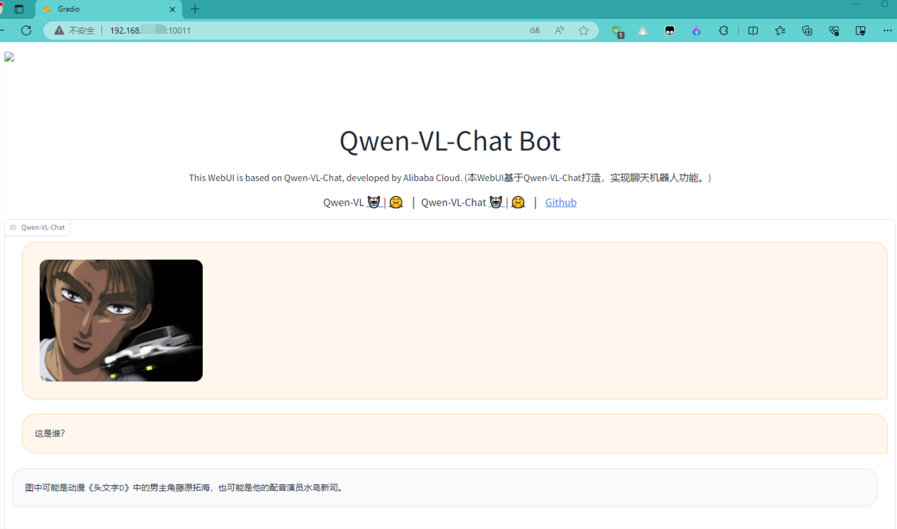

官方介绍：Qwen-VL 是阿里云研发的大规模视觉语言模型（Large Vision Language Model, LVLM）。 Qwen-VL 可以以图像、文本、检测框作为输入，并以文本和检测框作为输出。
官网介绍
运行环境：Ubuntu 22.04 + Intel(R)Xeon(R) CPU E5-2699 v4 2.20GHZ + RAM（512GB）
阿里的东东，下载就比较方便了，直接魔搭上下载就行，如下：
git lfs install
git clone https://modelscope.cn/qwen/Qwen-VL-Chat.git
这里将模型克隆到了

该章节跑一下官方介绍大模型时给出的示例代码。
首先新建一个项目，如下图：

说明：这张图片就是后面要测试的图片
因为GPU资源比较紧张，该项目的测试采用CPU，也就是需要安装CPU版本的
# 创建虚拟环境并激活
python3 -m venv venv
source ./venv/bin/activate
# 安装依赖
pip install torch torchvision torchaudio --index-url https://download.pytorch.org/whl/cpu
pip install transformers tiktoken matplotlib einops transformers_stream_generator accelerate
新建
from transformers import AutoModelForCausalLM, AutoTokenizer, GenerationConfig
model_path = '/home/xxx/llm/0-model/Qwen/Qwen-VL-Chat'
revision = 'v1.1.0'
tokenizer = AutoTokenizer.from_pretrained(model_path, trust_remote_code=True)
model = AutoModelForCausalLM.from_pretrained(model_path, device_map="cpu", trust_remote_code=True).eval()
model.generation_config = GenerationConfig.from_pretrained(model_path, trust_remote_code=True)
query = tokenizer.from_list_format([
{'image': './image/1.JPG'},
{'text': '这是谁？'},
])
response, history = model.chat(tokenizer, query=query, history=None)
print(response)
# 激活虚拟环境之后
python Qwen-VL-Chat.py

该章节使用Web页面体验一下该模型，代码克隆自：GitHub - QwenLM/Qwen-VL: The official repo of Qwen-VL (通义千问-VL) chat & pretrained large vision language model proposed by Alibaba Cloud.
首先对
# 在项目的根路径打开终端
python3 -m venv venv
source ./venv/bin/activate
# 安装依赖
# 这里还是使用CPU，先安装CPU版本的 torch
pip install torch torchvision torchaudio --index-url https://download.pytorch.org/whl/cpu
pip install -r requirements.txt
pip install -r requirements_web_demo.txt

最后看一下web界面的效果
